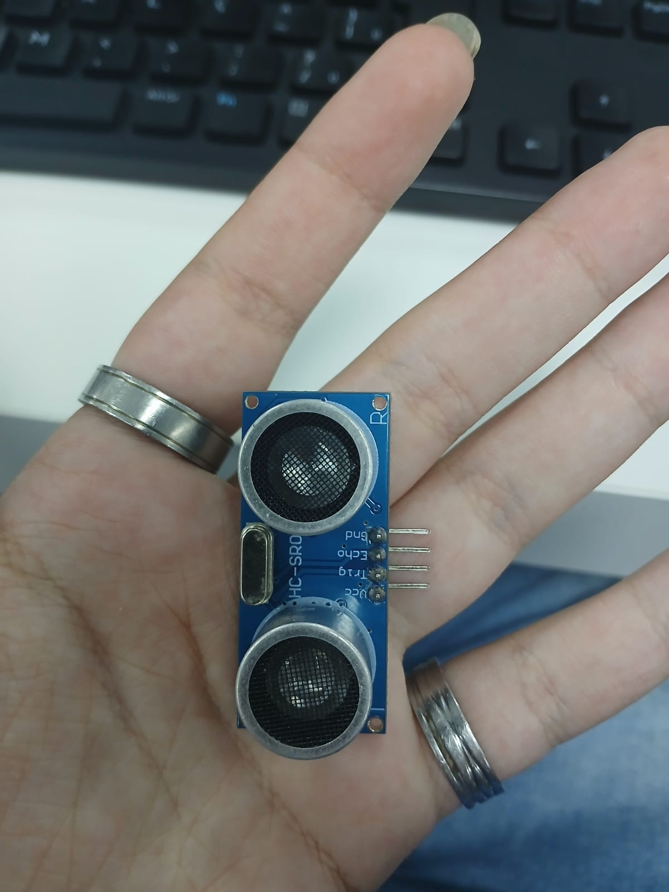
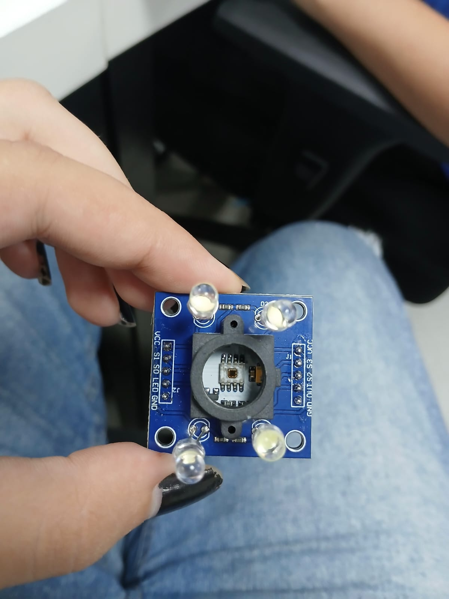
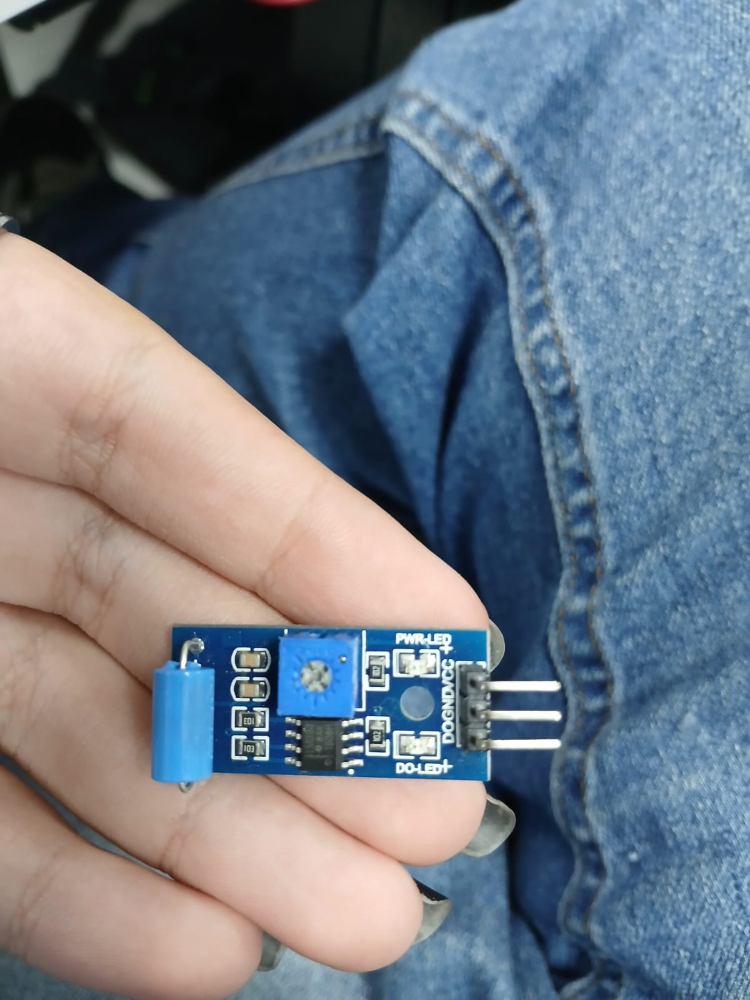
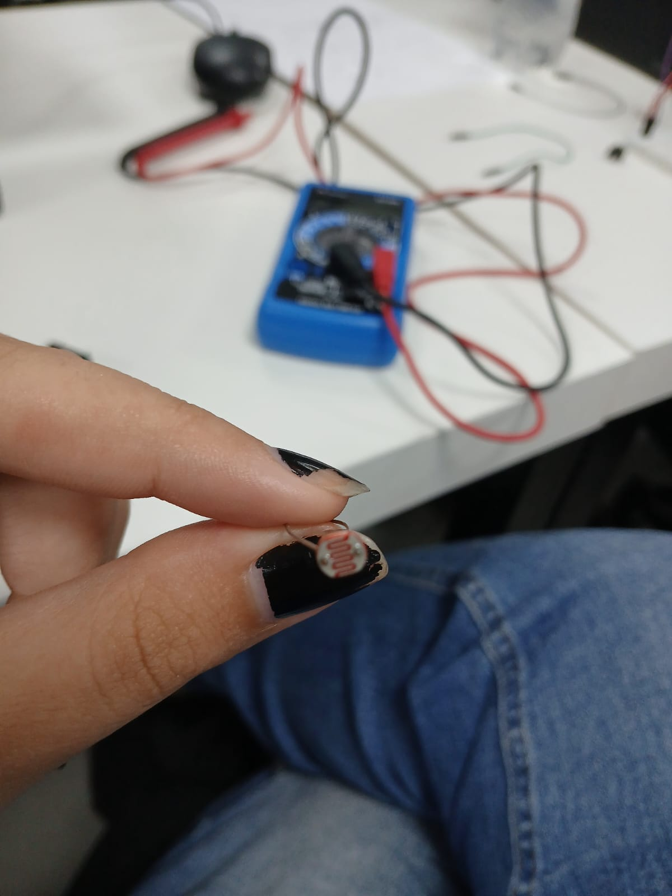
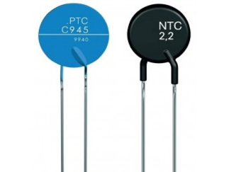
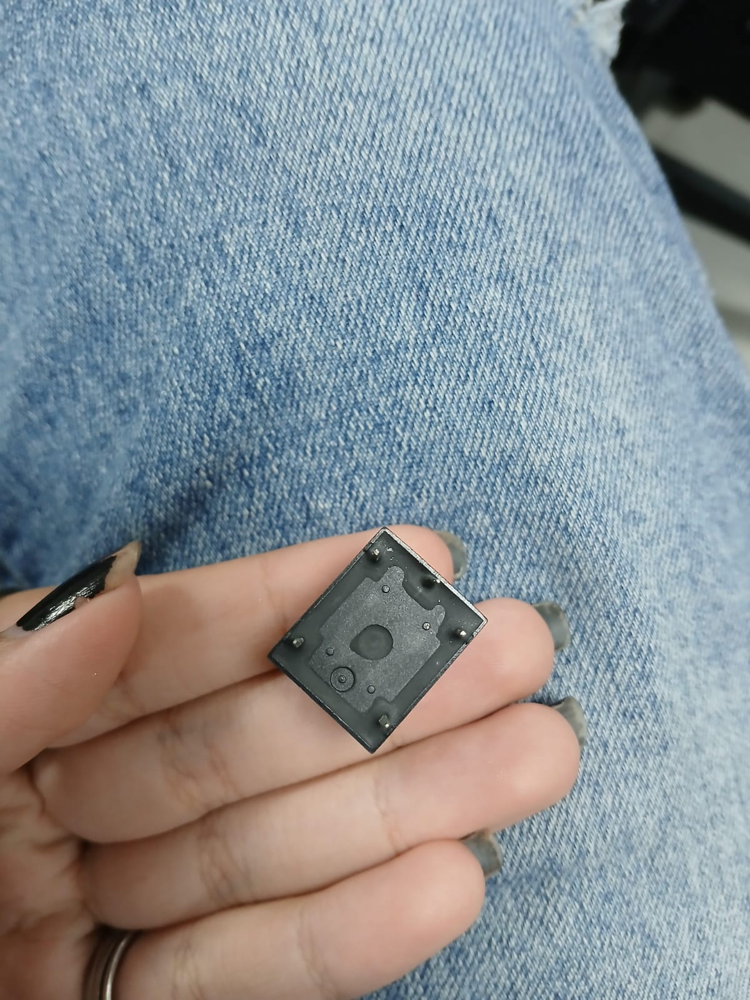

Sensores de medida analógica são aqueles que geram um sinal contínuo (não só 0 ou 1),
normalmente em forma de tensão, corrente ou resistência,
proporcional ao que está sendo medido.
SENSORES DE TEMPERATURA
Medem calor/frio.
Termistor
Termopar
RTD (resistência térmica)
Usados em clima, eletrônica e indústria.
SENSORES DE LUZ
Detectam intensidade luminosa.
LDR (resistor dependente de luz)
Fotodiodo
Fototransistor
SENSORES DE POSIÇÃO E MOVIMENTO
Medem deslocamento ou ângulo.
Potenciômetro
Encoder analógico
Sensor de efeito Hall (em alguns casos analógico)
SENSORES DE FORÇA E PRESSÃO
Medem peso ou pressão.
Célula de carga
Sensor piezoelétrico
Sensores de pressão (barômetro, industrial)
SENSORES DE GÁS E AMBIENTE
Detectam substâncias no ar.
Sensores de gás (MQ-2, MQ-135 etc.)
Sensores de umidade
SENSORES DE SOM
Captam ondas sonoras.
Microfone analógico
SENSORES ELÉTRICOS
Medem grandezas elétricas.
Sensor de corrente
Sensor de tensão
A escala analógica do Arduino é o intervalo de valores que ele usa
para representar um sinal analógico quando faz a leitura.
ESCALA PADRÃO
Na maioria das placas como o Arduino Uno:
Vai de 0 a 1023
Ou seja, tem 1024 níveis (10 bits)
O QUE ISSO SIGNIFICA?
O Arduino não lê tensão diretamente em volts — ele converte usando um ADC (conversor analógico-digital).
Exemplo com 5V:
0 → 0V
1023 → 5V
512 → ~2,5V
FÓRMULA
Para converter o valor lido em tensão:
Tensão = (valor lido / 1023) * 5
PINOS ANALÓGICOS
No Arduino Uno:
A0 até A5 são entradas analógicas
OBSERVAÇÃO IMPORTANTE
Algumas placas usam 3.3V em vez de 5V
Outras placas Arduino têm resolução maior (ex: 12 bits → 0 a 4095)
RESUMINDO
Escala padrão: 0 a 1023
Representa tensão de 0V até 5V (ou 3.3V)
Quanto maior o número, maior a tensão
O sensor NTC (Negative Temperature Coefficient) é um tipo de termistor, ou seja, um resistor que varia com a temperatura.
O QUE SIGNIFICA NTC?
NTC = coeficiente de temperatura negativo
Isso quer dizer:
Quando a temperatura aumenta, a resistência diminui
Quando a temperatura diminui, a resistência aumenta
COMO FUNCIONA
O NTC é feito de materiais semicondutores. Quando esquenta:
Os elétrons se movem mais
A corrente passa mais fácil
Resultado: resistência menor
COMPORTAMENTO TIPICO
Exemplo:
25°C → 10kΩ
50°C → ~3kΩ
80°C → ~1kΩ
(Números variam conforme o modelo)
UUSO COM ARDUINO
No Arduino Uno, ele normalmente é ligado em um divisor de tensão com um resistor.
O Arduino lê:
Valor analógico (0–1023)
Converte em tensão
Depois calcula a temperatura
APLICAÇÕES
Termômetros digitais
Controle de temperatura (ventoinha, geladeira)
Eletrônicos (proteção contra superaquecimento)
Automóveis
CARACTERISTICAS
Barato
Sensível
Não é linear (precisa cálculo)
RESUMINDO
NTC é um sensor de temperatura
Maior temperatura = Menor resistência
Muito usado com microcontroladores
O termopar tipo K é um sensor de temperatura muito usado na indústria por ser resistente,
barato e capaz de medir temperaturas muito altas.
O QUE É TERMOPAR?
É um sensor formado por dois metais diferentes unidos na ponta.
Quando essa junção é aquecida, surge uma pequena tensão elétrica —
isso é explicado pelo efeito termoelétrico conhecido como Efeito Seebeck.
TIPO K (MAIS COMUM)
O tipo K usa dois metais:
Cromel (liga de níquel + cromo)
Alumel (liga de níquel + alumínio)
FAIXA DE MEDIÇÃO
Aproximadamente: -200°C até 1260°C
Por isso é muito usado em:
Fornos
Indústria metalúrgica
Motores
Caldeiras
COMO FUNCIONA NA PRÁTICA
Quanto maior a temperatura → maior a tensão gerada (em milivolts)
Essa tensão é muito pequena, então precisa de amplificação
USO COM ARDUINO
No Arduino Uno, você não liga direto o termopar.
Você precisa de um módulo como:
MAX6675
MAX31855
Eles:
Amplificam o sinal
Convertem para digital
Facilitam a leitura
VANTAGENS
Mede temperaturas muito altas
Resistente
Resposta rápida
DESVANTAGENS
Menos preciso que alguns sensores (como RTD)
Precisa circuito extra
Pode sofrer interferência
RESUMINDO
Termopar tipo K = sensor de alta temperatura
Funciona pelo Efeito Seebeck
Gera pequena tensão proporcional ao calor
Precisa módulo para usar com Arduino
Existem vários tipos de termopar, cada um com combinação diferente de metais e faixa de temperatura.
Eles são padronizados e identificados por letras. Aqui estão os principais:
TIPO K= Cromel (+) / Alumel (–)
200°C a 1260°C
Mais usado, resistente, industrial
Recomendável para atmosferas oxidantes ou inertes.
Ocasionalmente podem ser usados abaixo de zero grau (-200 a 1260ºC)
TIPO J= Ferro (+) / Constantan (–)
-40°C a 750°C
Utilizados em atmosferas oxidantes, redutoras, inertes e no vácuo.
Não devem ser utilizados em atmosferas sulfurosas e não se recomenda
o uso em temperaturas abaixo de zero. (-40 a 760ºC)
TIPO T= Cobre (+) / Constantan (–)
-200°C a 350°C
Adequado para atmosferas oxidantes, redutoras, inertes e no vácuo.
Adequados para medições de temperaturas abaixo de zero. (-200 a 370ºC)
TIPO E= Cromel (+) / Constantan (–)
-200°C a 900°C
Próprios para atmosferas oxidantes e inertes. Em ambientes redutores ou vácuo, perdem suas características termoelétricas.
Adequado para uso em temperaturas abaixo de zero. (-200 a 870ºC)
TIPO N= Nicrosil (+) / Nisil (–)
-200°C a 1300°C
Excelente resistência à oxidação até 1200ºC, curva f.e.m.xTemp., similar ao tipo K, porém,
possui menor potência termoelétrica e apresenta maior estabilidade e menor drift tempo. (-200 a 1260ºC)
TIPO S e R = Platina-ródio (10%) / Platina
0°C a 1450°C
Recomendáveis em atmosferas oxidantes ou inertes.
Não devem ser usados abaixo de zero grau, no vácuo,
em atmosferas redutoras ou com vapores metálicos. (0 a 1600ºC)
TIPO B= Platina-ródio (30%) / Platina-ródio (6%)
0°C a 1800°C
Não devem ser usados abaixo de zero grau, no vácuo, em atmosferas redutoras ou atmosferas com vapores metálicos.
Mais adequado para altas temperaturas que os tipos S/R. (600 a 1700ºC)
EXEMPLO DE MEDIÇÃO - TERMOPAR TIPO K Temperatura (°C) --- Tensão (mV) 0 °C ====== 0,000 mV 25 °C ====== ~1,0 mV 100 °C ====== ~4,1 mV 200 °C ====== ~8,1 mV 500 °C ====== ~20,6 mV 1000 °C ====== ~41,3 mV
Selecionar um sensor de temperatura não é só escolher “o que mede calor” — depende muito do uso.
Aqui vai um guia prático para te ajudar a decidir com segurança:
DEFINA A FAIXA DE TEMPERATURA
Primeiro, saiba qual temperatura você precisa medir:
Até ~150 °C → sensores simples já atendem
Até ~600 °C → opções industriais comuns
Acima disso → precisa de sensores especiais
Exemplo:
Baixas temperaturas: termistor ou RTD
Altas temperaturas: termopar
DETERMINE A PRECISÃO NECESSÁRIA
Alta precisão (±0,1 °C a ±0,5 °C):
→ RTD (ex: PT100)
Média precisão:
→ termistor
Menor precisão, mas robusto:
→ termopar
AVALIE O AMBIENTE
Pergunte-se:
Tem vibração?
Tem umidade ou água?
Tem produtos químicos?
É ambiente explosivo?
Exemplo:
Ambiente agressivo → termopar (mais resistente)
Laboratório → RTD ou termistor
TEMPO DE RESPOSTA
Rápido: termopar, termistor
Mais lento: RTD
Se a temperatura muda rápido (tipo motor), isso importa bastante.
TIPO DE CONTATO
Contato (encostado ou inserido):
mais preciso
Sem contato (infravermelho):
Para objetos em movimento ou muito quentes
DISTANCIA DO SENSOR AO SISTEMA
Cabos longos → termopar é melhor
Sinais sensíveis → RTD precisa de cuidado com ruído
CUSTO
Baixo: termopar tipo J/K
Médio: termistor
Alto: RTD e sensores infravermelhos
EXEMPLOS PRÁTICOS
🔥 Forno industrial → termopar tipo K
❄️ Geladeira → termistor
🧪 Laboratório → RTD (PT100)
⚙️ Motor → termopar
📦 Medição sem contato → sensor infravermelho
Um sensor ultrassônico é um dispositivo que mede distância ou presença de objetos usando ondas sonoras
de alta frequência, normalmente acima de 20 kHz (infrassom para humanos).

Um sensor de cor é um dispositivo que detecta ou identifica a cor de um objeto
convertendo a luz refletida em sinais elétricos que podem ser processados por um microcontrolador ou CLP.

Um sensor de vibração é um dispositivo que detecta movimentos vibratórios ou choques mecânicos em máquinas, estruturas ou objetos.
Ele converte a vibração em um sinal elétrico que pode ser lido por microcontroladores, CLPs ou sistemas de monitoramento.

Um sensor LDR (Light Dependent Resistor) é um dispositivo que varia sua resistência
elétrica de acordo com a intensidade da luz que incide sobre ele.
Ele é muito usado para detectar luz ou escuro em aplicações simples de automação.

Um sensor NTC/PTC é um tipo de termistor, ou seja, um resistor cuja resistência elétrica varia com a temperatura.
Esses sensores são muito usados para medir temperatura ou proteger circuitos elétricos.

Um atuador relé é um dispositivo eletromecânico usado para acionar ou controlar
outros dispositivos elétricos através de um sinal de baixa potência.
Ele funciona como um interruptor controlado eletricamente, permitindo ligar ou desligar
cargas maiores sem contato direto com o circuito de controle.
